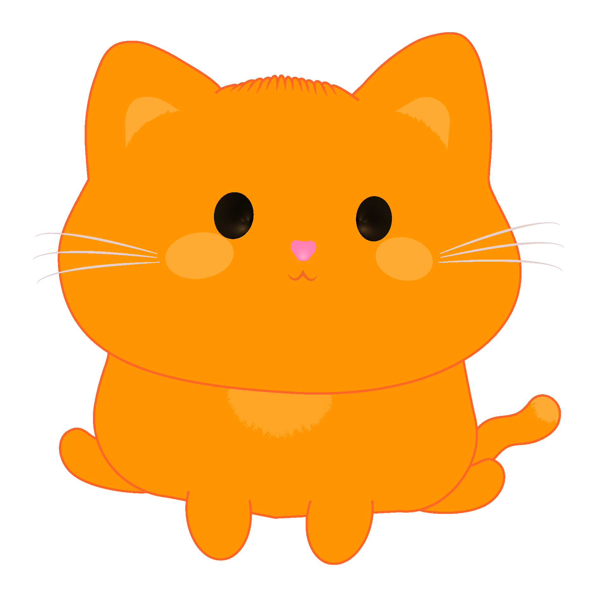
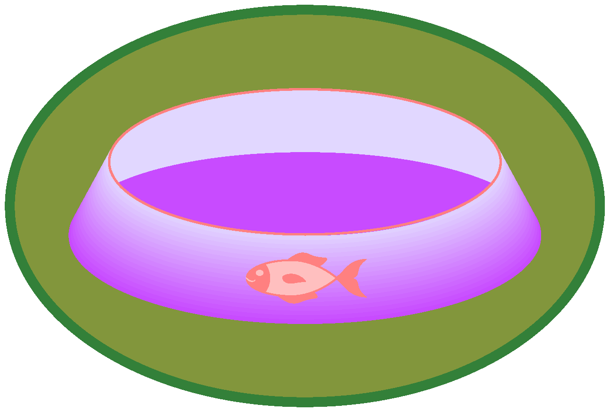
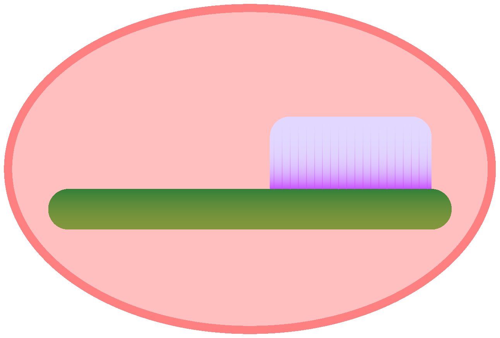
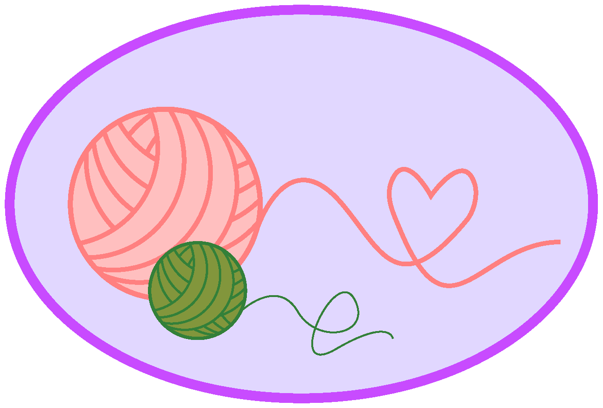
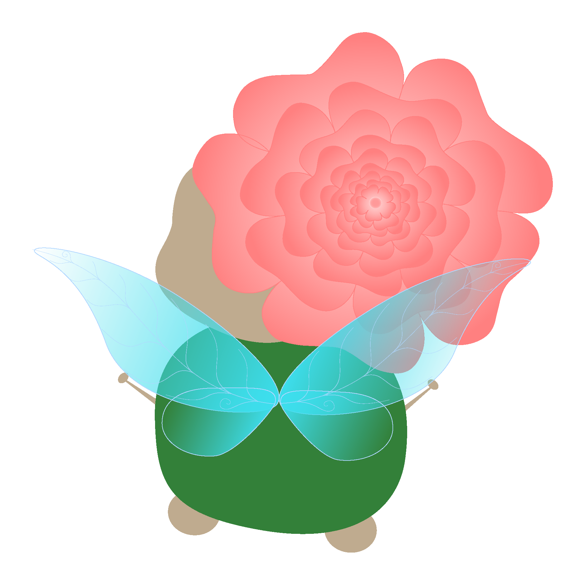

À propos

« Il était une fois, une petite fée nommé Ondine. Elle était l’amie des animaux. Un jour, en se promenant dans une forêt enchantée, elle trouva un petit chat perdu. Ondine décida d’en prendre soin. Aujourd’hui, elle a besoin de ton aide pour s’occuper de lui. »Ludique tout en restant éducatif, Mon Petit Miaou offre la possibilité aux tout-petits (2 à 5 ans) d’apprendre à prendre soin d’un animal de compagnie à travers différentes actions.
Ludique tout en restant éducatif, Mon Petit Miaou offre la possibilité aux tout-petits (2 à 5 ans) d’apprendre à prendre soin d’un animal de compagnie à travers différentes actions.
Clique ici pour jouer- Public Cible : 2 à 5 ans
- Simulation
- Éducatif
- Exploration
- Responsabilisation
- Ludique
- Créatif
Niveaux
Nourrit Petit Miaou

Soigne Petit Miaou

Joue avec Petit Miaou

Mécaniques du Jeu
- Effectuer une série d'action aux choix
- Explorer l'univers du jeu sans contrainte
- Apprendre à prendre soin d'autruit
Le Savais-Tu?
Lorsqu'un chat te regarde et cligne lentement les yeux, cela veut dire qu'il te fait confiance. C'est en quelque sorte marque de tendresse.
Les chats peuvent vivre jusqu'à 20 ans.
Créatrice

Salut! Moi c'est Mélyse!
Je suis étudiante en intégration multimédia au Collège de Maisonneuve.
Si je devais me décrire en temps qu'intégratrice multimédia, je dirais que je me distingue
par ma créativité, ma persévérance et ma soif d’apprentissage.
Mon parcours en intervention m’a permis de développer une sensibilité aux réalités sociales.